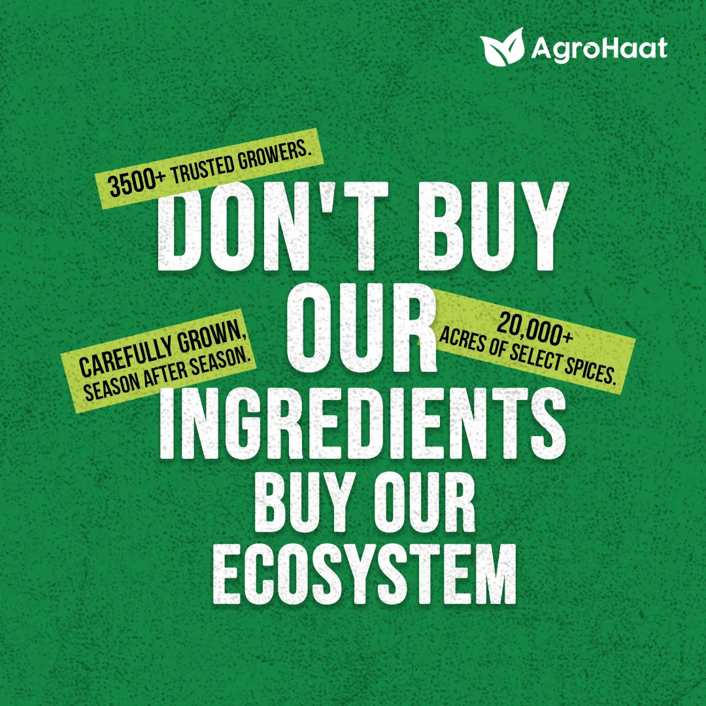
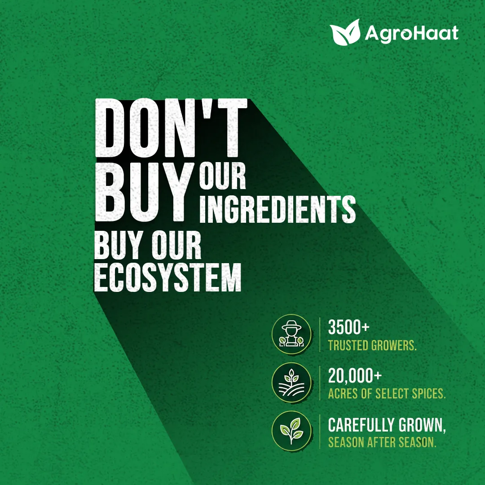
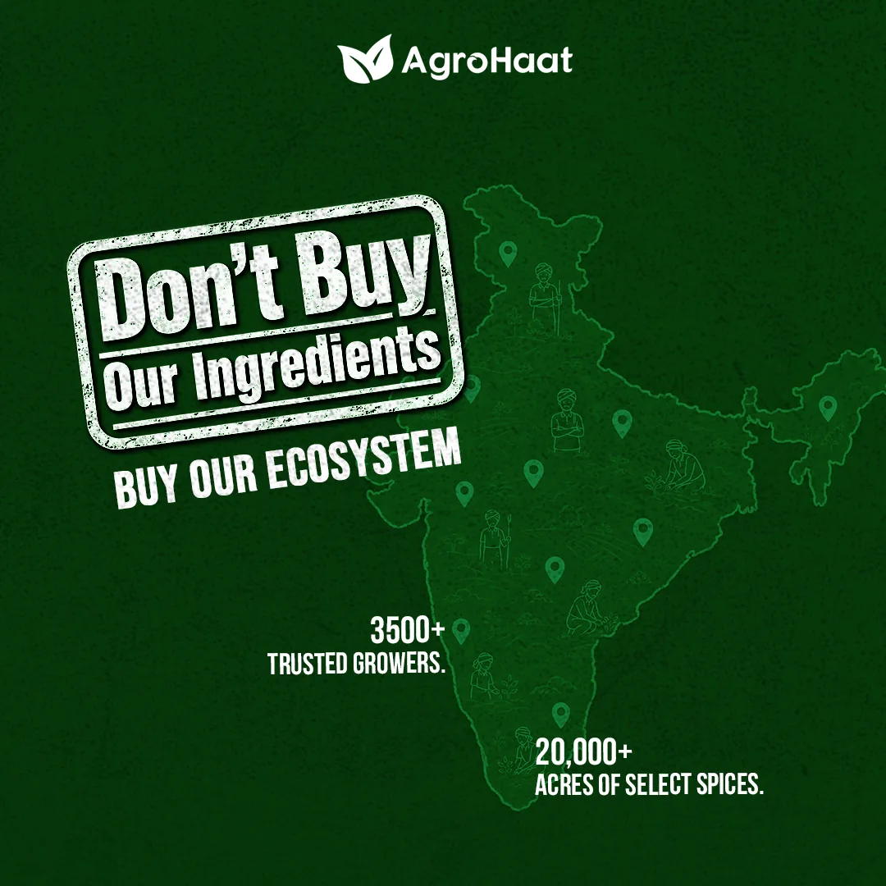
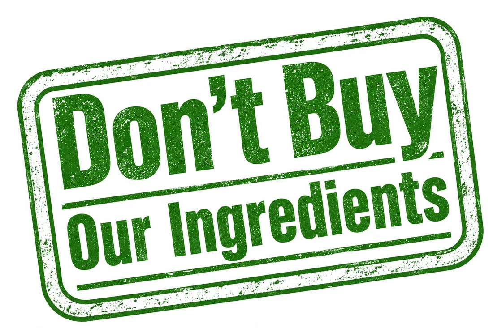
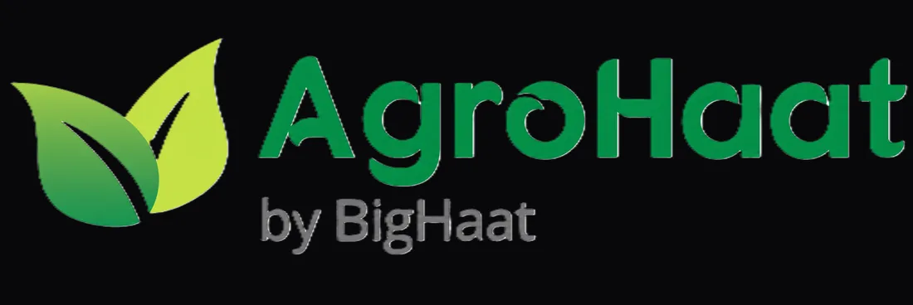
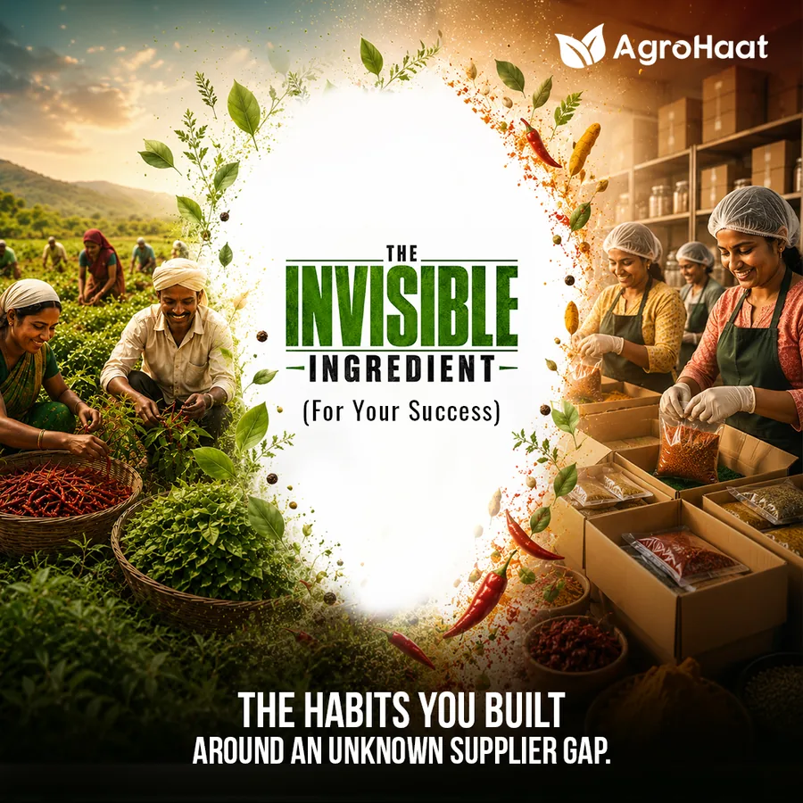

AgroHaat by BigHaat · 2025Don't Buy
Our
Ingredients
A B2B line for AgroHaat, BigHaat's subsidiary brand for herbs, spices and botanical extracts, which tells buyers not to buy the product and earns the order by proving the farm behind it.

AgroHaat is BigHaat's subsidiary brand for herbs, spices and botanical extracts, serving nutraceutical, food and pharma buyers, bought from the same farmers the platform sells inputs to, then processed and shipped to more than 25 markets. Its buyers are procurement managers and importers, not shoppers, and the category they buy in is built on sameness: best price, best product, certified. Buyers absorb that by running extra audits and keeping a second supplier on file.
The strategy work set three objectives: define the brand story, position AgroHaat as the premier market linkages company buyers want to work with, and build an engine that turns that positioning into qualified pipeline. The line had to do two opposing jobs: read as a refusal in a LinkedIn feed and still move a procurement manager to a sample request. It could not be a one-off ad, so everything was locked: the master line verbatim, five pillar headlines in sequence, certifications given hero space, and the same three moves across LinkedIn, trade press, booth and sales deck.
Don't buy our ingredients.
Buy the ecosystem.
The category opens with a claim, so AgroHaat opened with a refusal. The line stops the scroll, names the risk the buyer is actually carrying, an unverifiable lot, and moves the argument to what sits behind the spice: 3,500 growers, 20,000 acres, BigTrace geo-fencing, eleven certifications, an awarded sustainability programme and a 24-hour reply. It also happens to be true in a way most exporters cannot claim: this is the same farmer base the input business serves, so the ecosystem is not a slide, it is the supply chain. Five pillar headlines carry the proof in order, and the close resolves the refusal: if you still want our ingredients, we'd love to talk.
- Master line locked word for word across LinkedIn feed ads, trade-show fascia, video openers, email subject lines, booth exit signage and the #DontBuyOurIngredients sign-off.
- Five pillar headlines in sequence: buy the farmer ecosystem, buy the science (BigTrace geo-fenced tracking), buy the transparency (eleven global certifications), buy the commitment (the awarded SDP ESG programme), buy the partnership (24-hour response, free samples).
- Line bank for social and print/OOH: 'we built the farms before we sold the spice', 'before you buy the spice, meet the farm', 'eleven certifications. One reason: so you never have to take our word for it.'
- Channel flow in three moves, disrupt, prove, convert, mapped from awareness (the line alone) to consideration (the five pillars) to conversion (portfolio plus the turn), with one pillar per trade-press issue for sustained presence.
- Close written for every asset: 'now, if you still want to buy our ingredients, we'd love to talk', signed off with agrohaat.in. The stamp version of the line was drawn as a reusable graphic device.




The numbers the campaign put in front of buyers, proof, not measured results.
Client: AgroHaat by BigHaat. Campaign creatives reproduced with permission.
The Invisible Ingredient
AgroHaat by BigHaat · 2025